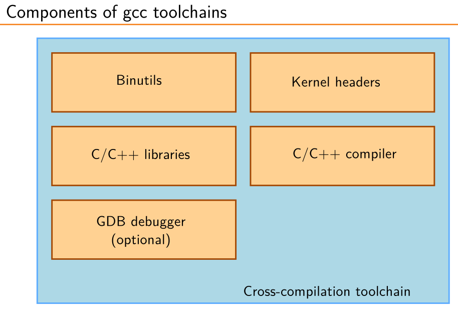
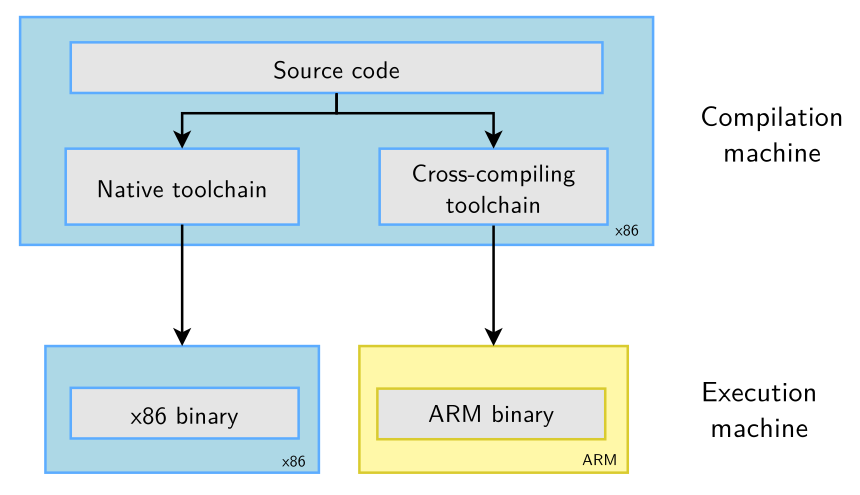

Toolchain introduction
A toolchain is defined as the set of tools required to produce a software. In the context of embedded development, a toolchain is composed of:
- Binutils: a set of tools that generate and manipulate binaries (usually with the ELF format) for a given CPU architecture. They include tools such as the assembler
as, and the linkerld, between others. - Kernel headers: they define the way in which the application code interacts with the underlying OS.
- C/C++ libraries: musl, glibc, newlib, picolibc, etc.
- C/C++ compiler: normally
gcc, althoug LLVMclangis rising in popularity. - GDB debugger.

A toolchain is identified by a tuple like:
Where:
- Arch: CPU architecture (
arm,riscv). - Vendor: Free-form vendor name.
- OS: Operating system name (
linux,none). - ABI: Application Binary Interface (
gnueabihf,eabi).
Introduction to cross compilation
Cross-compilation is defined as the process of generating binary files from a host CPU architecture to a target hardware with a different CPU architecture.

There are three approaches to getting a cross-compilation toolchain:
-
Getting a pre-compiled toolchain, such as the Bootlin's toolchains or Linaro's toolchains. This is the simplest and most convenient solution, but you can't fine tune the toolchain to your needs.
-
Building the toolchain as a part of a build system, such as Buildroot or Yocto Project.
-
Using Crosstool-NG, which lets you customize the toolchain to your liking. This approach will be reviewed in the remainder of this article.
Crosstool-NG
Crosstool-NG's purpose is to build toolchains. Nothing more, nothing less. It is quite straightforward to install and use, provided that you know what you need and what you are doing. Crosstool-NG's documentation is short and sweet, so I suggest to consult it in doubt, but here is is a short summary:
The list of commands to install locally are as follows:
VERSION="1.28.0"
wget "http://crosstool-ng.org/download/crosstool-ng/crosstool-ng-${VERSION}.tar.bz2"
tar -xf "crosstool-ng-${VERSION}.tar.bz2"
cd "crosstool-ng-${VERSION}"
sudo apt update && sudo apt install -y \
gcc g++ gperf bison flex texinfo help2man make libncurses-dev \
python3-dev autoconf automake libtool libtool-bin gawk wget bzip2 \
xz-utils unzip patch libstdc++6 rsync git meson ninja-build
./configure --enable-local
make
cat ./bash-completion/ct-ng >> "${HOME}/.bashrc"
The best way to configure a toolchain is to select the configuration for a similar architecture and then tune it from there. The list of available toolchains can be seen with:
Then, the details of a toolchain can be seen with the show-<tuple> command, while the details of the current toolchain can be seen with show-config.
./ct-ng show-<tuple>
./ct-ng show-<config>
# E.g.
$ ./ct-ng show-arm-none-eabi
[L...] arm-none-eabi
Languages : C,C++
OS : bare-metal
Binutils : binutils-2.45
Compiler : gcc-15.2.0
Linkers :
C library : newlib-4.5.0.20241231 picolibc-1.8.10
Debug tools :
Companion libs : gmp-6.3.0 isl-0.27 mpc-1.3.1 newlib-nano-4.5.0.20241231
Companion tools :
Next, load the default toolchain's configuration into the .config file with:
After that, make configurations in the GUI menu with nconfig or menuconfig:
Finally, start building the toolchain with:
You may store and load the configuration files with:
There are two different kinds of toolchains, each with different requirements:
- Bare-metal toolchains: For devices without an OS, or maybe a simple RTOS.
- Embedded Linux toolchains: For devices with the Linux OS.
Configuration options and usage are explained in each sub-section.